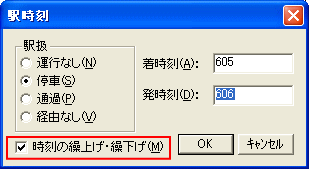

[駅時刻]ダイアログにおいて、[駅時刻の繰上げ・繰下げ] のチェックボックスをONにした状態で、既存の列車の途中駅の着時刻・発時刻をダイアログで変更すると、以後の駅の時刻がすべて繰上げ／繰下げになります。

例えば、ある駅の発時刻が "1000" になっている場合、この発時刻を[駅時刻]ダイアログで "1002" に変更すると、それ以降の駅の時刻はすべて、＋２分されます。
また、『駅時刻変更』機能（後述）で繰上げ、繰り下げを行うこともできます。
参照：多数の列車の駅時刻を変更（『駅時刻変更』機能）
次へ 戻る